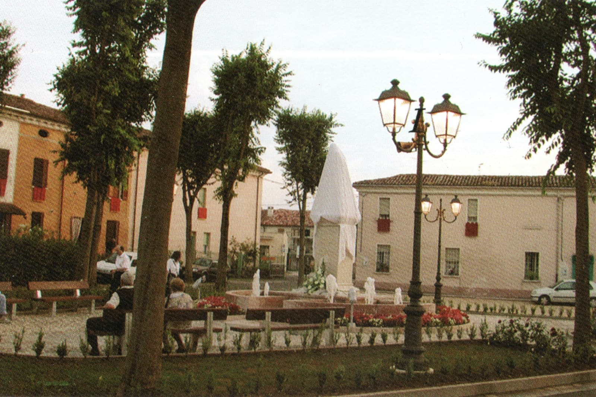
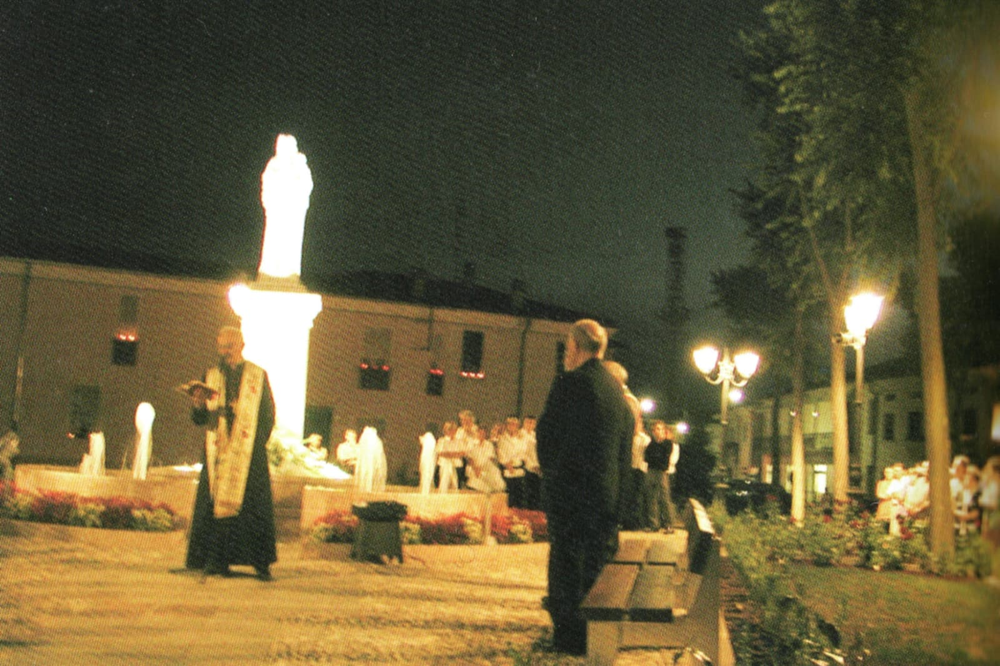
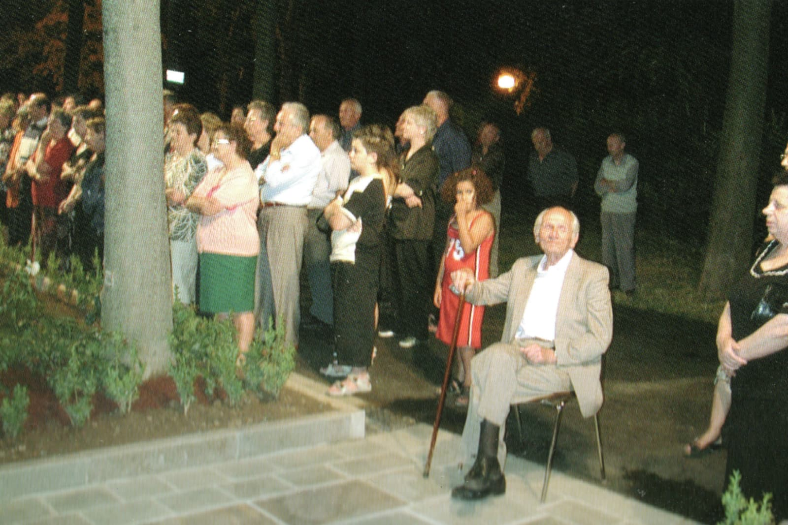

Il paese
Chi è Rivalta prima di essere un elenco di servizi: da dove viene il nome, quante persone ci vivono davvero, com'è fatto il tessuto delle case, cosa resta del passato.
Anagrafica
| Denominazione | Rivalta sul Mincio |
|---|---|
| Comune | Rodigo (MN) |
| Regione / Provincia | Lombardia / Mantova |
| CAP | 46040 |
| Prefisso telefonico | 0376 |
| Codice ISTAT comune | 020051 |
| Codice catastale | H481 |
| Codice fiscale ente | 80005810207 |
| Coordinate centro | 45.180192 N, 10.677137 E |
| Altitudine casa comunale (Rodigo) | 31 m s.l.m. |
| Superficie comunale | 41,6 km² |
| Nome abitanti | Rodighesi (comune) / Rivaltesi |
| Distanza da Mantova | ~14–15 km a nord-ovest |
| Distanza da Milano | ~120 km |
Etimologia
Il nome deriva dalla posizione geografica: la riva più alta del fiume Mincio. Nel dialetto locale il fiume è semplicemente «al Mens» e la palude «la val».
Frazioni e località
Il Comune di Rodigo si compone di tre centri: Rodigo (capoluogo), Rivalta sul Mincio e Fossato.
Le località minori mappate nell'intorno sono Camignana, Casazze, Belvedere, Soana Alta, Soana Bassa, Pilone, Canova, Corte Catenaccio, Monte Perego, Corte Tesorino e Bolzacchini.
Confini e relazioni
Comuni confinanti
Castellucchio · Ceresara · Curtatone · Gazoldo degli Ippoliti · Goito · Porto Mantovano
Gemellaggio
Berg (Baden-Württemberg, Germania), dal 2004.
Rivalta non è un comune, quindi un gemellaggio suo non ce l'ha: quelli ufficiali sono del Comune di Rodigo, che li tiene insieme a cultura e turismo in un unico ufficio. Il gemellaggio registrato è con Berg, circondario di Ravensburg, dal 2004.
Accanto a Berg circola però anche il nome di Weingarten, e non è una contraddizione: i due comuni stanno nello stesso consorzio, il Gemeindeverwaltungsverband Mittleres Schussental, insieme a Baindt e Baienfurt. A Rivalta l'occasione più documentata è la cena «Guten Appetit!» del 2010 a Corte Mincio, organizzata dalla Pro Loco Amici di Rivalta con la Croce Rossa di Rodigo e di Weingarten — un rapporto fra comitati di Croce Rossa, che è cosa diversa da un gemellaggio fra comuni.
La data del 2004 viene dal dossier locale, non da un registro pubblico: né OpenStreetMap né Wikidata riportano un gemellaggio per Rodigo (relazione OSM 44361, Wikidata Q42324). Chi vuole chiudere la questione la chiude all'ufficio Cultura e Turismo del Comune.
Demografia
Rivalta è il centro abitato più popoloso del Comune di Rodigo, davanti al capoluogo.
Comune di Rodigo
| Indicatore | Valore | Nota |
|---|---|---|
| Popolazione residente | ~5.170–5.280 ab. | stime recenti, variano per fonte e data di rilevazione |
| Densità | ~126–130 ab/km² | — |
| Superficie | 41,6 km² | ISTAT, rilevazione 2011 |
| Popolazione 2009 | 5.407 ab. | dato storico ISTAT |
Rivalta sul Mincio (frazione)
| Centro abitato | Abitanti | Rilevazione |
|---|---|---|
| Rivalta sul Mincio | 2.984 | fine 2016 — Gazzetta di Mantova, 24 gennaio 2017 |
| Rodigo capoluogo | 2.053 | fine 2016 — stessa fonte |
| Fossato | 248 | fine 2016 — stessa fonte |
ISTAT pubblica il dettaglio per frazione solo in occasione dei censimenti: per un numero anagrafico aggiornato ci si rivolge all'Ufficio Anagrafe del Comune di Rodigo.
Dove trovare i dati ISTAT ufficiali
| Cosa | Dove |
|---|---|
| Popolazione residente, bilancio demografico | demo.istat.it — Demografia in cifre |
| Censimento permanente 2021 (dettaglio località) | esploradati.censimentopopolazione.istat.it |
| Basi territoriali / sezioni di censimento (shapefile) | istat.it — Basi territoriali e variabili censuarie |
| Statistiche elaborate con grafici | tuttitalia.it/lombardia/75-rodigo/statistiche |
| Confini amministrativi ufficiali | ISTAT — Confini delle unità amministrative |
Per lavori di tipo CAT o urbanistico i dati censuari per sezione sono la fonte giusta: permettono di isolare Rivalta dal resto del comune, cosa che i dati comunali aggregati non fanno.
Edificato e caratteri urbanistici
954 edifici mappati nell'area di studio. Il paese è a tessuto basso e diffuso.
Tipologie edilizie
| Tipologia | N° |
|---|---|
Generico (yes) | 473 |
| Casa | 143 |
| Residenziale | 113 |
| Villetta isolata | 59 |
| Schiera | 26 |
| Appartamenti | 20 |
| Garage singolo | 19 |
| Annesso agricolo | 19 |
| Commerciale / retail | 7 |
| Magazzino | 7 |
| Industriale | 6 |
| Cascina | 6 |
| Blocco garage | 6 |
| Servizio | 6 |
Altezze: dove il dato è presente prevalgono i 2 piani (118 edifici), seguiti da 1 piano (23) e 3 piani (2).
Lettura urbanistica
Rivalta si è sviluppata molto negli ultimi decenni, in particolare dopo la costruzione della circonvallazione negli anni '70. A parte il centro storico — a ridosso della chiesa e del fiume — il paese è formato per lo più da costruzioni recenti: villette, bifamiliari e case a schiera, di aspetto ordinato.
Il paese si divide in sei contrade — la Filanda, il Roccolo, le Colonie, i Piasaröi, la Plàtana e le Fanfane — che a settembre si sfidano al Palio delle Contrade. Di tre di quei nomi resta traccia nella toponomastica di oggi: Via Roccolo, Piazza Platana col suo parco e l'Area Feste, e l'insegna del pub «Le Antiche Colonie».
Non ci sono vestigia monumentali di rilievo: l'edificio più interessante è la Corte Arrivabene, residenza dei conti omonimi, tipica casa padronale del Settecento immersa in un ampio giardino.
In OpenStreetMap l'edificio è mappato come Villa Arrivabene: è lo stesso, e insieme al parco e al mausoleo compone il sistema degli Arrivabene in paese. Fra gli altri edifici col nome proprio mappati in centro c'è la Dana, a 231 m.
Il fascino di Rivalta sta nel suo essere, da secoli, un paese indissolubilmente legato al Mincio: le case più vecchie, le prime viuzze e la chiesa sono tutte lì, vicino al fiume.
Monumenti e memorie
| Monumento | Ubicazione |
|---|---|
| Monumento ai Caduti delle Guerre | Via Giuseppe Garibaldi — 35 m dal centro |
| Monumento a Salvo D'Acquisto | zona Via Madonnina |
| Monumento al Marinaio | Via Porto |
| Mausoleo Arrivabene | zona Via Giovanni Arrivabene |
| Madonnina di Piazza Chiesa | Piazza Chiesa, ad accesso libero — scoperta il 27 giugno 2004 |
| Ponte della Ferradina (rudere storico) | ~1,3 km dal centro |
| Lavatoio storico | Via Porto |
| «Panchina dei Terroni» | murale del Gruppo dei Terroni, 6 posti, inaugurata il 14 luglio 2024 — ~895 m dal centro |
L'inaugurazione della Madonnina — 27 giugno 2004
La Madonnina è la statua in cima alla colonna che sta in mezzo alla fontana di Piazza Chiesa: è lei il monumento della piazza, ed è da lei che la fontana prende il nome. Fu scoperta la sera del 27 giugno 2004, davanti al paese.



Chiese e luoghi di culto
| Luogo | Ubicazione | Note |
|---|---|---|
| Chiesa dei Santi Vigilio e Donato parrocchiale |
Piazza Chiesa | Chiesa settecentesca, cattolica. Sorge dove Matilde di Canossa aveva eretto un castello che, con quello di Volta Mantovana, difendeva Mantova verso nord. Del castello non resta traccia — fu distrutto dai mantovani dopo la morte di Matilde — ma restano tracce del fossato. |
| Chiesetta di Santa Maria di Lourdes | zona Via Renzo Ascari | cattolica |
| Cappella di Sant'Antonio | zona Via Giuseppe Garibaldi | cattolica, non accessibile in carrozzina |
| Oratorio | zona Via Francesca | cattolico |
| Santella votiva | zona Corte Mincio | edicola religiosa cristiana |
| Chiesa di Canova | località Canova — ~1,66 km | cristiana |
| Cimitero di Rivalta sul Mincio | — | area di ~0,7 ha |
Il castello di Matilde, l'assedio del 1091 e la nascita della palude sono raccontati per esteso in Storia.
Orari delle S. Messe
Dal 5 settembre 2026 Rivalta segue il calendario dell'Unità pastorale «Un Solo Pane», che tiene insieme sei paesi: Castellucchio, Rivalta, Rodigo, Gabbiana, Ospitaletto e Sarginesco.
Festive
| Giorno | Ora | Chiesa |
|---|---|---|
| Sabato | 18.00 | Gabbiana |
| Domenica | 7.30 | Sarginesco |
| Domenica | 9.00 | Ospitaletto e Rodigo |
| Domenica | 11.00 | Castellucchio, Rivalta e Sarginesco |
| Domenica | 18.00 | Castellucchio |
Feriali
| Giorno | Ora | Chiesa |
|---|---|---|
| Lunedì | 18.00 | Ospitaletto |
| Martedì | 18.00 | Rivalta |
| Mercoledì | 18.00 | Gabbiana |
| Giovedì | 8.00 | Castellucchio |
| Giovedì | 18.00 | Sarginesco |
| Venerdì | 18.00 | Castellucchio |
| Sabato | 7.30 | Sarginesco |
In parrocchiale, Piazza Chiesa, quello che si celebra a Rivalta è questo:
L'adorazione eucaristica è tutti i venerdì, dalle 19.00 alle 20.00.
In caso di funerale nel paese, nel giorno in cui è prevista, la S. Messa feriale è sospesa. In tutti gli altri casi la Messa si celebra, a meno che non dicano il contrario un sms sul gruppo Wap UP o il sito dell'unità pastorale — il Google Site della Parrocchia San Giorgio Martire di Castellucchio, dove gli orari sono aggiornati in tempo reale.
Fino al 4 settembre 2026 a Rivalta la festiva si celebra anche il sabato alle 18.00; dal 5 settembre resta la sola domenica alle 11.00.
Le due parrocchie
Parrocchia Santi Vigilio e Donato
Piazza Chiesa 6 — 46040 Rivalta sul Mincio (MN)
Parrocchia S. Maria della Rosa
Vicolo Parrocchiale 2 — 46040 Rodigo (MN)
Le altre chiese e cappelle del paese — Santa Maria di Lourdes, Sant'Antonio, la santella di Corte Mincio — non hanno un calendario di celebrazioni fisso.